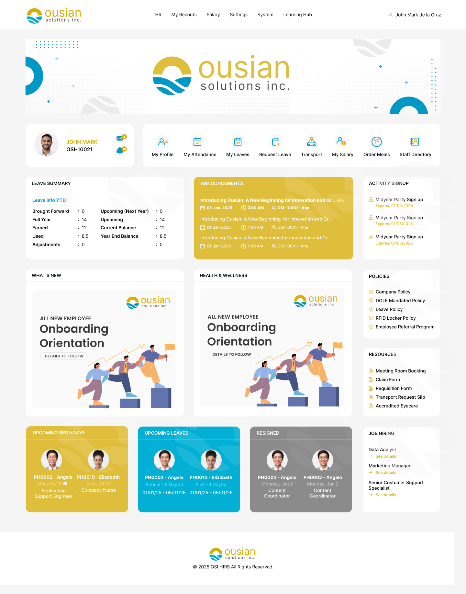

Back to work
Dashboards &
Dashboards &
Internal Systems
Designing enterprise-grade dashboards, HRIS modules, and internal tools that make complex workflows feel simple, accessible, and efficient for real teams.
4 projects across HRIS, property management, employee development, and workforce scheduling — each solving a distinct set of enterprise UX challenges.

01
Human Resource Information System
End-to-end employee management, payroll, leave, and organizational workflows.
View case study
02
StaysTrack — Condo Management System
Property management platform for rental dues tracking, expiring contracts, occupancy, payments, and staff movement.
View case study
03
Aspire360 — Individual Dev Plan
Employee development platform for IDP goal setting, competency tracking, manager review, and acceptance workflows.
View case study
04
Work Schedule System
Workforce scheduling platform — shift assignment, attendance tracking, schedule requests, and calendar-based team views.
View case study